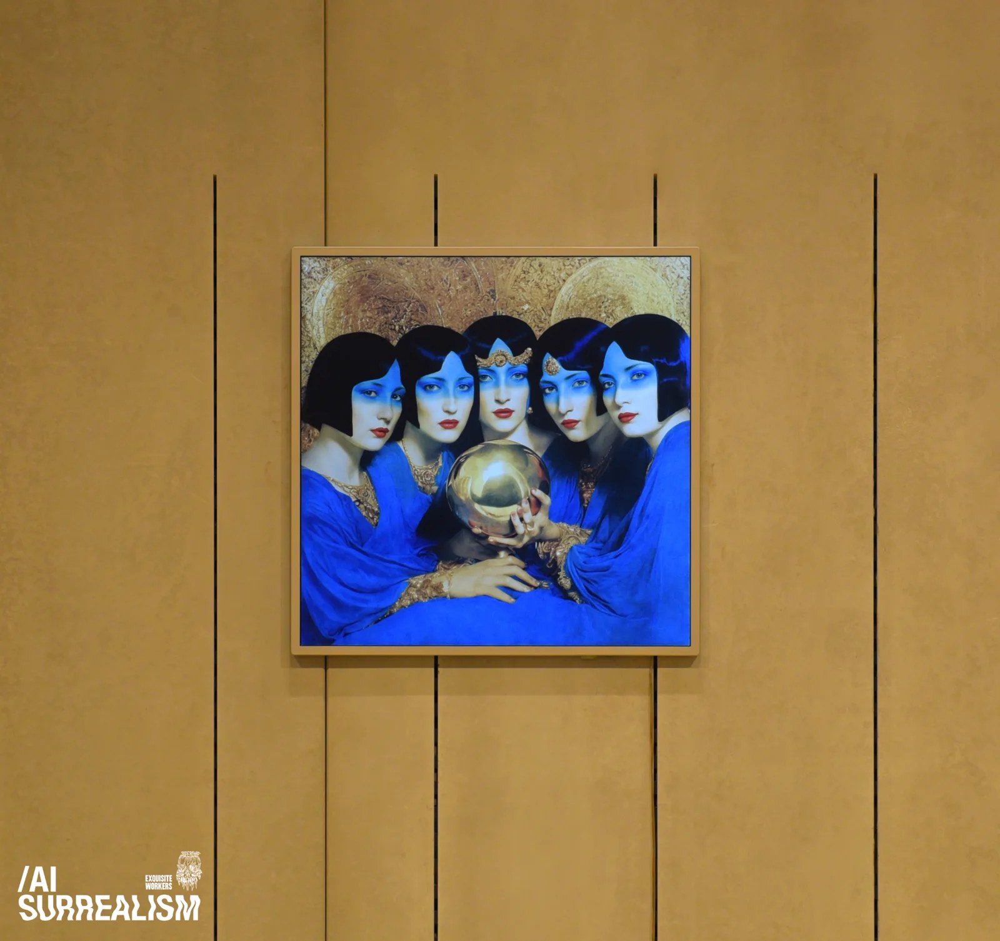
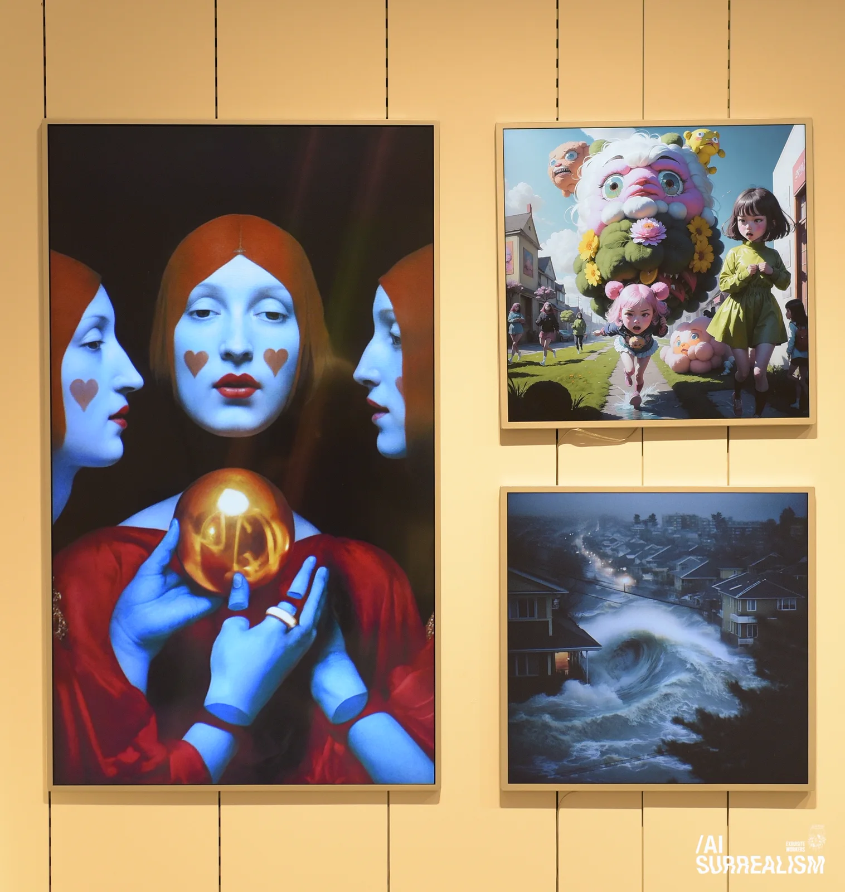
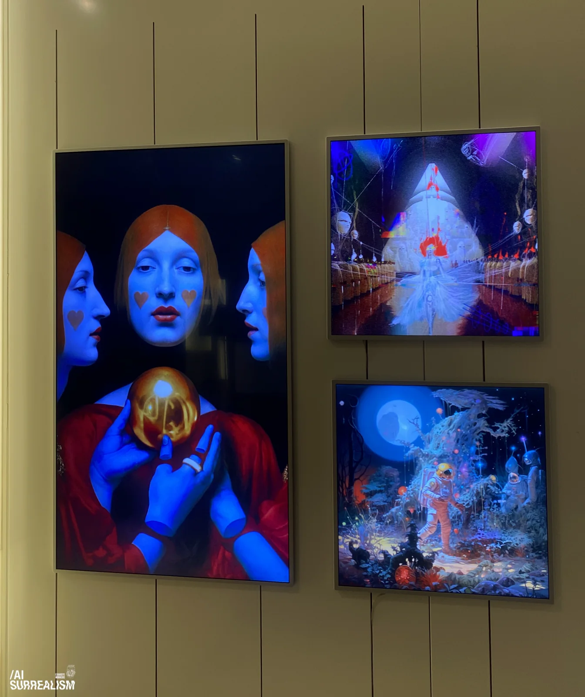

AI Surrealism
New York · The Oculus, Superchief Gallery NFT · 2023
Participation in the international exhibition as St Laurent Jr.
For AI Surrealism, I created three works: An Outsider’s View, Egocentrism and Girl with a Trowel.
The project brought together one hundred AI artists. The exhibition was organised by Exquisite Workers and Superchief Gallery NFT, and curated by Anna Dart.
Photos and Images



